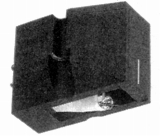
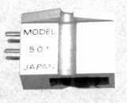
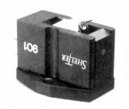
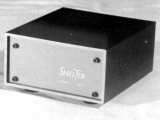
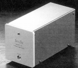

SHELTER（シェルター）
フィデリティ・リサーチ（FR）でMCカートリッジ開発などに従事していた技術者（小澤安生氏）が1986年2月に設立したブランド。かつてはプリ・パワーのセパレートアンプに進出したこともある。現在はカートリッジ・トランスなどアナログディスク関連専業で運営されているようだ。
�T.カートリッジ
現在（2018年1月時点）ではMM型（Model
201)もあるようだが、当サイトの扱う範囲では、すべてMC型カートリッジである。

(Model 701)Model 701 Model 701ES Model 701EM

(Model 501)Model 501 Model 501 Classic Model 501 Type�U

(Model 901)
�U.昇圧トランス・イコライザーアンプ
ブランド立ち上げ時の最初の製品がカートリッジのModel
701とトランスのModel 411だった。後継機のModel 411
Type�Uは現行モデル（2010年12月時点）。イコライザーアンプはプリ・パワーのセパレートアンプに進出した時期にModel
407-2が発売された。

(Model 411)(昇圧トランス） Model 411 Model 411 Type�U

(Model 216)（フォノイコライザー） Model 407-2 Model 216